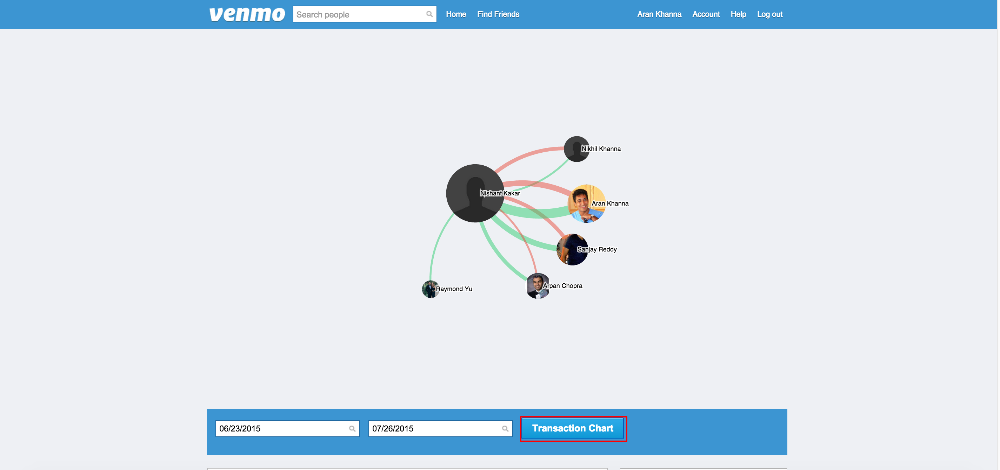
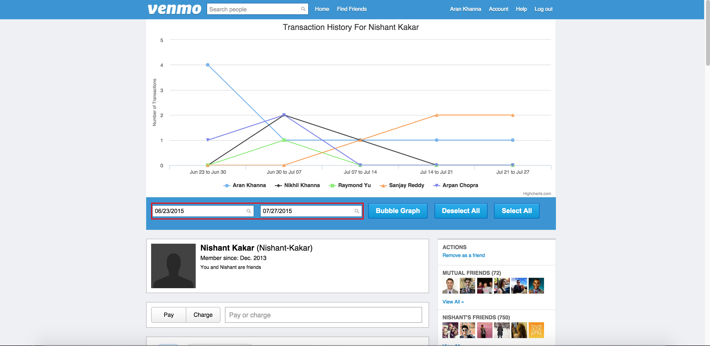
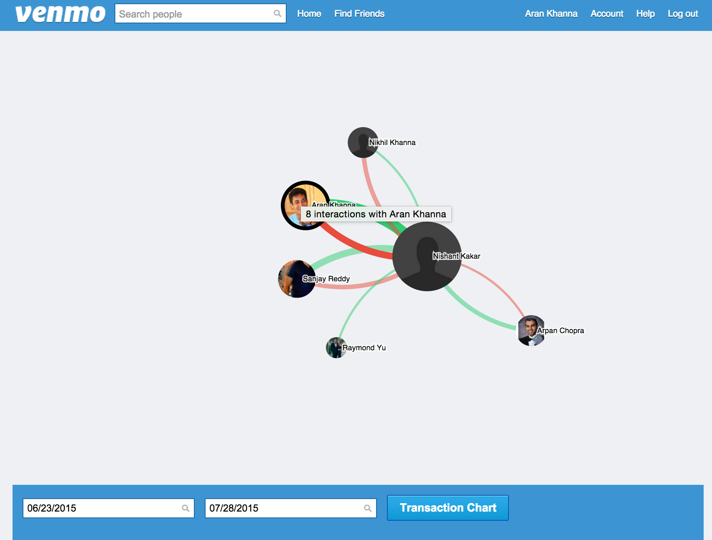
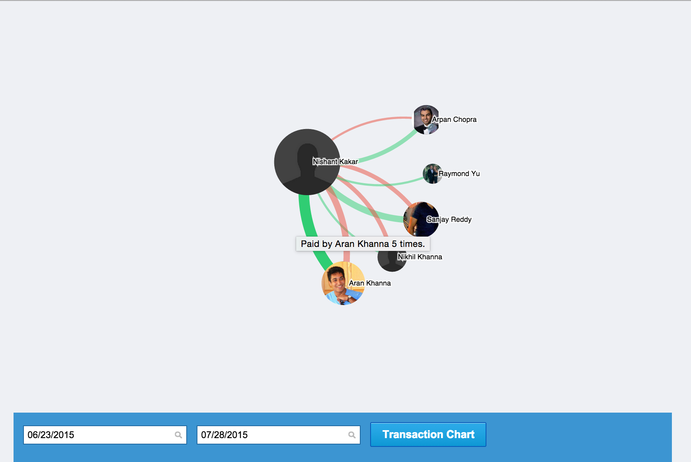
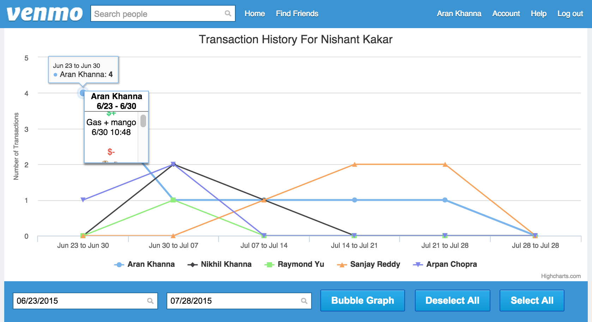
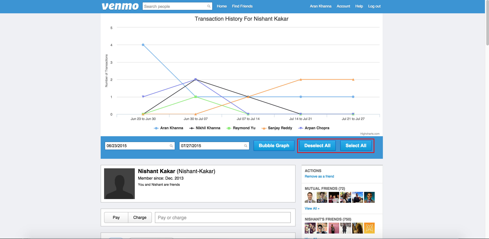

How Do I Use The Money Trail?
The two vizualizations in the Trail are good for determining the timing, content and frequency of transactions on Venmo. You can switch between these vizualizations by hitting the "Bubble Graph" or the "Transaction Chart" buttons in the tool bar.

You can chnage the Trail to show only transactions that happened between two given dates by setting that date range in the tool bar.

In the bubble graph the size of a circle corresponds to the number of Venmo transactions with that user (which can be seen by hovering over the circle).

The size of the link connecting to that circle to the user corresponds to the number of times the user paid or was paid by that current user (the green links correspond to payments to the current user, and red links are payment from the current user). This can also be seen by hovering over the links.

In the chart every user the current user interacted with is displayed as a series. Interactions with each user are aggregated for every time range on the bottom axis and are displayed as a set of points in that user's series. Clicking a point brings up a scrollable popup box showing all the transactions with that user in that time range, along with the corresponding messages and times ($+ indicates a payment to the current user and $- indicates a payment from the current user).

Clicking the select all button in the tool bar will activate all series on the chart and clicking the deselect all button will deactivate all series on the chart (if there are a lot of series these actions could take a while to complete so please be patient).

Note that nither visualization can tell how much money was exchanged. Only who paid whom